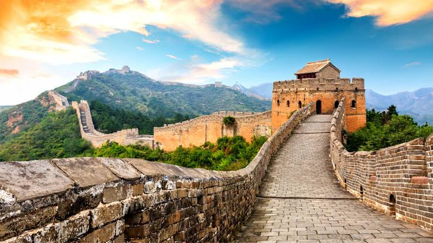

The Great Wall Of China
The Great Wall was continuously built from the 3rd century BC to the 17th century AD on the northern border of the country as the great military defence project of successive Chinese Empires, with a total length of more than 20,000 kilometers. The Great Wall begins in the east at Shanhaiguan in Hebei province and ends at Jiayuguan in Gansu province to the west. Its main body consists of walls, horse tracks, watch towers, and shelters on the wall, and includes fortresses and passes along the Wall.
The Great Wall reflects collision and exchanges between agricultural civilizations and nomadic civilizations in ancient China. It provides significant physical evidence of the far-sighted political strategic thinking and mighty military and national defence forces of central empires in ancient China, and is an outstanding example of the superb military architecture, technology and art of ancient China. It embodies unparalleled significance as the national symbol for safeguarding the security of the country and its people.